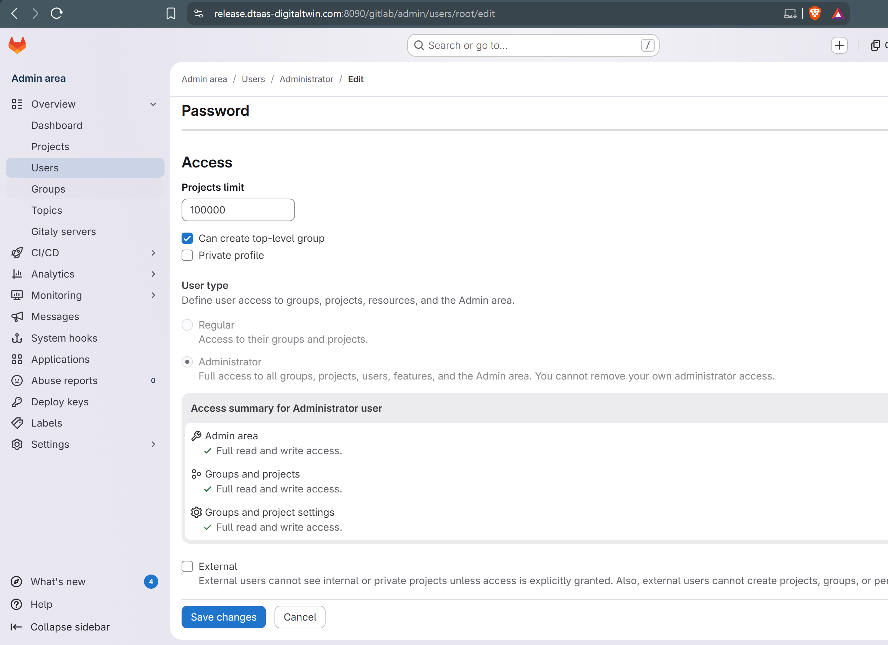
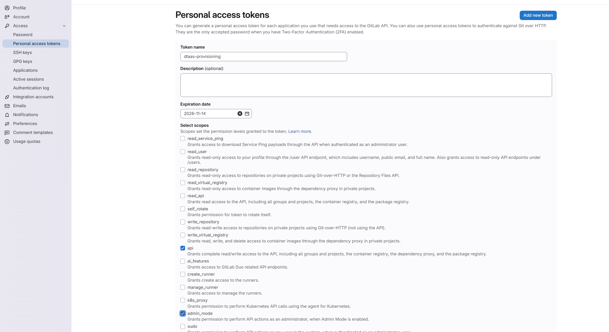

Install DTaaS with the CLI
The DTaaS command line interface (CLI) is the recommended way to
install and operate a DTaaS deployment. A single dtaas entry point
generates deployment projects, validates configuration, starts and
stops deployments, manages users and rotates certificates for all
supported scenarios.
This page covers the standard installation workflow and every dtaas
command. The complete dtaas.toml field reference, with the
validation rules, an annotated example file and the user-file model,
is in the Config Reference.
Installation
Install the CLI inside a virtual environment.
The package needs Python 3.10 or newer.
Quick start
From a clean machine to a running deployment:
Tear it down again with dtaas platform uninstall. Add
--remove-user-files to also delete the per-user workspace
directories. That flag asks for confirmation; pass --yes to skip
the prompt.
Deployment types
--type |
When to use | Support level |
|---|---|---|
localhost |
Local development or demo, single user | dev/demo only |
insecure-server |
Multi-user HTTP demo | insecure/demo only |
secure-server |
Multi-user HTTPS | production-supported |
secure-server-gitlab |
HTTPS with bundled GitLab | production-supported |
workspace-localhost |
Workspace with Dex on localhost | dev/demo only |
workspace-secure-server |
Workspace with Keycloak | production-supported |
Warning
Types marked dev/demo only or insecure/demo only run over
plain HTTP with default or static credentials. Do not expose
them to the internet or shared networks. Production-supported
types still require the manual hardening steps documented in the
README.md and configuration notes (CONFIG.md, or
CONFIGURATION.md for workspace-secure-server) shipped with each
generated project.
The generated packages match the manual installation scenarios. The CLI fills in the configuration and file structure that the manual path asks you to prepare by hand.
Configuration
The CLI reads all its settings from dtaas.toml. It looks for the
file in --output-dir first and then in the current working
directory, so one top-level dtaas.toml can serve a deployment
generated into a subdirectory.
The main sections are:
[common]: the server DNS name and the absolute path of the DTaaS installation directory.[common.security]: thetlsflag andcerts-src, the source directory for TLS certificates.[common.resources]: default resource limits for user workspace containers (cpus,mem_limit,pids_limit,shm_size), with aset_limitsflag that turns enforcement off. Adjust them to the host capacity and your tenancy policy.[[users]]: the starting users, one record each.[gitlab]: optional GitLab account provisioning foruser add(see GitLab provisioning).[frontend]: the OAuth application of the DTaaS web client, for the server types.- One section per deployment type, such as
[secure-server], which holds the OAuth credentials for that type.
Run dtaas config validate after every edit. It reports all problems
at once; see Validation Rules for
the full list.
Abridged configuration
An abridged dtaas.toml:
Notes
- Edits to
dtaas.tomlaffect only user containers created after the change. - To apply new limits to existing containers, recreate or restart the user containers, for example by deleting and re-adding the user with the CLI or by restarting the container with Docker Compose.
- Give memory and shared memory values a unit (
M,G).
Commands
Every command follows a dtaas <noun> <verb> grammar with four nouns,
listed in workflow order:
| Noun | Acts on |
|---|---|
config |
dtaas.toml and the user registry |
deployment |
The generated deployment files |
platform |
The installed core services, as one unit |
user |
Additional users, one at a time |
The config, deployment and platform commands accept
--output-dir (default .). The user commands always act on the
current directory, so run them from the deployment directory.
If a command fails because a path is root-owned (for example TLS
certificates under /etc/letsencrypt), the CLI suggests re-running
it as sudo -E env PATH="$PATH" dtaas <command>.
config generate / config validate
generate writes dtaas.toml and a sample users.csv (bulk input
for user add --file) into --output-dir. --force overwrites an
existing dtaas.toml. validate reports every problem in the file at
once; see Validation Rules.
Options:
| Option | Default | Description |
|---|---|---|
--output-dir PATH |
. |
For generate: target directory (created if missing). For validate: search location |
--force |
off | (generate only) Overwrite an existing dtaas.toml |
config reconcile
Reports drift between dtaas.users.registry.json (the users who
should be provisioned) and the live compose.users.yml services
(the users who are provisioned):
It lists users in these categories:
- missing: registered but not provisioned.
- unexpected: provisioned but not in the registry. This can come from a manual edit or a partial delete, so investigate it.
- drifted: provisioned, but the live config no longer matches
what
.dtaas.state.jsonrecorded at the last provisioning. - absent: provisioned (the user has a compose service), but the
container is gone, for example after an interrupted
user add. - desired-status drift: provisioned, but the live container state
does not match the user's registry
desired_status(for exampledesired 'paused' but container is 'running').
When everything matches, it prints In sync: no drift detected. If
Docker is unreachable, the command warns that it could not verify
container state and reports only the drift it can read from the
compose file. It never reports In sync in that case.
Without --fix, the command is read-only. With --fix, it
reprovisions missing and drifted users, restarts the
containers of absent users, and then pauses, stops or starts every
provisioned user to match its desired_status:
--fix runs the same code as dtaas user add, so it acts on the
current directory. Combining it with an --output-dir other than the
current directory is rejected. It also refuses to run when Docker is
unreachable.
--fix never touches unexpected services, because removing
something that is running should be a deliberate action. Use
dtaas user delete for those.
Options:
| Option | Default | Description |
|---|---|---|
--output-dir PATH |
. |
Installation directory to inspect |
--fix |
off | Reprovision missing/drifted registry users, and enforce desired status, after reporting |
deployment generate
Copies the project structure for one deployment scenario
(docker-compose.yml, config examples and supporting files) into a
target directory. It also writes the user-workspace templates and the
files/template/ skeleton, and, for the types that run the logger,
creates logs/logger/ (see platform install).
Options:
| Option | Default | Description |
|---|---|---|
--type NAME |
(required) | Deployment scenario (see Deployment Types) |
--output-dir PATH |
. |
Target directory (created if missing) |
--force |
off | Overwrite files that already exist |
Examples:
Generated files besides the scenario's compose tree:
| Item | Purpose |
|---|---|
users.server.yml |
Docker Compose template for HTTP deployments |
users.server.secure.yml |
Docker Compose template for HTTPS/TLS deployments |
users.resources.yml |
Per-user resource-limit overlay, merged in when set_limits is true |
files/template/ |
Skeleton copied into each new user workspace |
When dtaas.toml is present, its values are substituted into the
generated files (dotenv files, the client config and, for TLS types,
the certs/ directory). See
Configuration Substitution
for details. If dtaas.toml is not found, the command prints a note
and the generated files keep their placeholder values.
Verify the Docker image tag
users.server.yml and users.server.secure.yml pin a workspace
image tag (e.g. intocps/workspace:main-56c6f68). Check
Docker Hub and
update the tag to a current, stable version before deploying.
platform install
Starts a generated deployment.
The command runs docker compose up -d against the
docker-compose.yml in the installation directory. Before that, it
makes sure a workspace directory exists for every [[users]] record,
creating any missing one from files/template/, and sets its
ownership to 1000:100.
For the localhost, insecure-server, secure-server and
secure-server-gitlab types, it also creates logs/logger/, where the
logger microservice writes its events, and gives it to 1000:1000, the
user that runs the logger. This is the logger step of the manual
installation guides, so an installation done with the CLI needs no
extra step. Only logs/logger/ changes owner: secure-server-gitlab
also mounts logs/ into GitLab, so logs/ itself is left alone.
Both ownership changes use sudo on Linux and macOS and are skipped on
Windows. Before sudo runs, the command says what it is for, since sudo
may ask for your password. logs/logger/ is left alone when it already
belongs to 1000:1000, for example when you are that user. When a change
fails, for example because sudo is not available, the command prints a
warning with the commands to run by hand and carries on:
When logs/ or logs/logger/ is a symbolic link, the command does not
change its owner and prints a warning instead.
Options:
| Option | Default | Description |
|---|---|---|
--output-dir PATH |
. |
Installation directory containing the generated deployment |
Because the CLI looks for dtaas.toml in --output-dir first and
then in the current working directory, a single top-level
dtaas.toml can serve a deployment generated into a subdirectory:
The command fails with an error if docker-compose.yml is missing,
dtaas.toml cannot be found or the Docker daemon is unreachable.
platform uninstall
Tears the whole installation down, stopping and removing containers and networks.
Containers of users added with user add run as a separate Compose
project. The command removes them first so that they do not hold the
shared network open. Per-user workspace files are kept by
default.
To also delete the per-user workspace directories and the
CLI-owned dtaas.users.registry.json and .dtaas.state.json:
This is destructive, so the command asks for confirmation. Skip the
prompt in non-interactive scripts with --yes:
Options:
| Option | Default | Description |
|---|---|---|
--output-dir PATH |
. |
Installation directory |
--remove-user-files |
off | Also delete per-user workspace dirs + registry/state files |
--yes / -y |
off | Skip the confirmation prompt for --remove-user-files |
Note
--remove-user-files removes only the per-user directories inside
<output-dir>/files/. It keeps files/common/ and
files/template/, so a later platform install can recreate the
user directories. It refuses to follow a symlinked files/.
Double-check --output-dir before using this flag.
Lifecycle operations
These commands work on an installed deployment. status reports
its state; stop/start and pause/resume suspend and resume it.
None of them remove containers or networks; uninstall does that.
They exit 0 on success, including when nothing is installed, and
non-zero on failure, so CI and ops scripts can call them safely.
platform stop, start, pause and resume act on the core
services only and never touch per-user containers. Suspend or
resume additional users with
dtaas user stop/pause/resume.
platform status still reports the whole installation, core services
and user containers.
Lifecycle command matrix:
| Command | docker compose verb |
Effect | Containers kept? | Reverse with |
|---|---|---|---|---|
platform install |
up -d |
Create and start every service | n/a | platform stop / platform uninstall |
platform status |
ps (read-only) |
Report per-service state; no change | n/a | n/a |
platform stop |
stop |
Terminate the processes, keep the containers | yes | platform start |
platform start |
start |
Start previously stopped containers | yes | platform stop |
platform pause |
pause |
Freeze the processes (memory preserved) | yes | platform resume |
platform resume |
unpause |
Thaw previously paused processes | yes | n/a |
platform uninstall |
down |
Stop and remove containers and networks | no | platform install |
stop vs pause
stop sends SIGTERM/SIGKILL: the processes end, and a restart
runs them from scratch (reverse with platform start). pause
uses the kernel cgroup freezer: the processes are suspended in
place with their memory intact and resume instantly (reverse with
platform resume), but a paused container still holds its
resources. Use stop to free CPU and pause for a short
suspension. pause expects running containers and fails if the
deployment is already stopped.
platform status
Reports the state of every service, for both the core services and the user containers.
The state is one of running, paused, stopped (a terminated
container, which Docker calls exited), restarting or
not created (a service defined in docker-compose.yml that has no
container yet).
For automation, --json prints the same records as JSON:
For the user containers alone, use dtaas user status.
Options:
| Option | Default | Description |
|---|---|---|
--output-dir PATH |
. |
Installation directory |
--json |
off | Emit machine-readable JSON instead of the table |
platform stop / platform start
stop stops the core services with docker compose stop; start
brings the stopped containers back with docker compose start.
Containers and networks are kept, so stop is not an uninstall.
After stop, the command notes how many per-user containers are
still running and suggests dtaas user stop --all. Both commands
print There is no existing DTaaS / Workspace installation and exit
0 when nothing is installed (no containers in any state), so they
are safe to call repeatedly.
Options:
| Option | Default | Description |
|---|---|---|
--output-dir PATH |
. |
Installation directory |
platform pause / platform resume
pause freezes the running core-service containers in place with
docker compose pause; resume thaws them with
docker compose unpause. Memory is preserved and resuming is almost
instant.
Like stop, pause notes any per-user containers still running.
Both commands report the absent installation and exit 0 when
nothing is installed (no containers in any state).
Options:
| Option | Default | Description |
|---|---|---|
--output-dir PATH |
. |
Installation directory |
platform update --certs
Replaces the TLS certificates of a running deployment in place, without regenerating the project or copying files by hand.
The command reads [common.security].certs-src from dtaas.toml,
then:
- Validates the new certificate pair (parseable, private key matches the certificate, no expired intermediates).
- Stops the
traefikservice to release open file handles. - Swaps the validated files into
<output-dir>/certs/, backing up the live pair and restoring it on any failure. - Restricts the private key to
0600(POSIX; prints a warning on Windows). - Restarts
traefikand waits for it to come back up.
If validation fails, the live certificates are left untouched. The command is safe to run repeatedly.
Options:
| Option | Default | Description |
|---|---|---|
--certs |
(required) | Refresh the deployment's TLS certificates |
--output-dir PATH |
. |
Installation directory |
platform update --config
Re-applies the values in dtaas.toml to the service config files of
an installed deployment without regenerating the project.
The command runs the same substitution as deployment generate. If
any file changed, it recreates all deployment services with
docker compose up -d --force-recreate. It detects the deployment
type from docker-compose.yml.
--config validates dtaas.toml before changing anything and
refuses to apply an invalid file. A second run with no dtaas.toml
changes reports No configuration changes and restarts nothing. If
secrets are still template placeholders after the update, the command
lists them.
Options:
| Option | Default | Description |
|---|---|---|
--config |
(required) | Re-apply dtaas.toml to installed service config files |
--dry-run |
off | Report what would change without writing or restarting |
--output-dir PATH |
. |
Installation directory |
--certs and --config can be combined in one invocation; at least
one of them is required.
User management
User management spans three files, each with a single owner; see User Files for the full model.
dtaas.users.registry.jsonis the CLI-owned record of every additional user (added after installation withuser add), including theirdesired_status(running/paused/stopped). Onlyuser add,delete,pause,stopandresumechange it; do not edit it by hand..dtaas.state.jsonis a git-ignored, disposable cache of what is running: per-user container id, status and a config hash, refreshed on every add and delete. It is safe to delete; the CLI rebuilds it on the next provisioning run.config reconcilecompares it against the registry to detect drift.
Add users
The starting users an instance is installed with are declared in
dtaas.toml as [[users]] records (see
Abridged Configuration). You edit them once
at installation time, and the CLI never rewrites them.
Users added later are not written to dtaas.toml. Add them with
dtaas user add, either one at a time:
--group is repeatable, not comma-separated. Pass it once per group
to add a user to several groups:
or in bulk from a CSV file (dtaas config generate writes a sample
users.csv next to dtaas.toml):
groups is a ;-separated list and load_balance is true or
false. The password column is used only with GitLab provisioning
(see below). Give either a USERNAME or --file, not both. A bare
dtaas user add with neither is rejected, so it cannot reprovision
the whole registry by accident.
Both forms merge the users into the CLI-owned
dtaas.users.registry.json with desired_status set to running.
Only the newly added users are started; users already running are
left alone, so adding one user never recreates the others. A username
already in the registry is reported ('alice' already exists,
skipping) and never added twice or overwritten. A username declared
in dtaas.toml's [[users]] is reported as a starting user, whose
workspace dtaas.toml manages; with GitLab provisioning on, naming
one creates its GitLab account (see below). A run that adds nobody
ends with No new users added. and exits 0.
To reprovision every registry user at once (for example after
compose.users.yml was lost), use dtaas config reconcile --fix.
Options:
| Option | Default | Description |
|---|---|---|
USERNAME |
— | Add one user (requires --email, except for a dtaas.toml starting user) |
--file PATH / -f |
— | Bulk-add users from a CSV |
--email TEXT |
— | Email for USERNAME (enables forward-auth routing); read from [[users]] for a starting user, and another address given for one is reported and not applied |
--group TEXT |
additional |
Group tag for USERNAME; repeat the flag for multiple groups |
--load-balance / --no-load-balance |
on | Mark USERNAME for load balancing |
--password TEXT |
— | Initial GitLab password for USERNAME; only used when GitLab provisioning is enabled (see below). It wins over [[users]].password. Prefer the users.csv password column or the interactive prompt, because a command-line value is visible in shell history and the process list |
For each registry user, the command copies files/template/ into
files/<username>, creating the directory when it is missing, and
sets its ownership to 1000:100 where it has the permission to;
without that permission it leaves the ownership as it is and carries
on.
When a user has an email, the CLI adds the matching
traefik-forward-auth routing rule to config/conf.server, so you do
not need to edit conf.server by hand. A user added from a
users.csv row with an empty email cell gets no rule. Restart the
container for the change to take effect:
GitLab provisioning (optional)
When [gitlab].provision = true in dtaas.toml (off by default),
user add also creates a GitLab account for each user it adds and issues
that account a Personal Access Token (PAT). The containers are provisioned
first; a GitLab failure never undoes them, but it does make the command
exit non-zero. The [gitlab] keys, the password sources and the files
written are described in
GitLab provisioning settings.
Set up the admin token
Provisioning needs an admin token, set up once per installation by a GitLab administrator:
1. Use an administrator account. In Admin area > Users, click Edit on the account and check that User type is Administrator.

2. Create its token, signed in as that account, under
User settings > Access > Personal access tokens (Add new token).
Tick the api scope, and admin_mode too if the instance has Admin
Mode enabled, then export the token where you run dtaas:

Choose an expiry you will rotate, because provisioning stops working
the day the token lapses. When
DTAAS_GITLAB_PAT and [gitlab].pat hold different tokens, the
exported one is used and the CLI prints
Note: using the admin token from DTAAS_GITLAB_PAT.
Scenarios
Each scenario shows what dtaas user add prints. The output of
docker compose while containers start is left out.
Add one user. Without --password, the CLI asks for the initial
GitLab password with hidden input, twice:
Add users from a CSV. Fill in the password column of users.csv,
then make the file readable by you alone:
A starting user. Naming a [[users]] user of dtaas.toml creates
only their GitLab account and token. Their workspace already runs from
docker-compose.yml, their email is the one in dtaas.toml, and their
password is [[users]].password or, when that is unset, the prompt:
An --email that differs from the one in dtaas.toml is not applied,
and the run says so:
A user with no password. When a named user has no password and no
account from an earlier run, the whole run is refused before anything is
registered or started. Fill in the password column and run the same
command again:
A password GitLab refuses. GitLab refuses a password that is too
short or built from common words, for example one that contains pass
or the username. The user's container is up, but their account is not
created. The line under GitLab account creation failed. is GitLab's own
reason, for example:
Retry after a failure. Fix the cause (here, bob's password in
users.csv) and run the same command again. Both users are already
registered, so their containers are left alone; alice already has a
token and is skipped, and only bob's account is created:
A retry never leaves a second live token for a user, so repeating the
command after a partial failure is always safe. When the account was
created but its token was not saved, the retry first revokes any token
named dtaas that an earlier run issued, then issues a new one to that
same account (the registry keeps its id) instead of creating the
account again. No password is needed for that, so naming the user again
is enough:
A token that is lost or revoked is replaced in GitLab directly.
A token that cannot be saved. Before creating any account, user
add checks gitlab_user_tokens.json. A leftover
gitlab_user_tokens.json.tmp from an interrupted run is removed with a
warning; a file that is not a JSON object, or cannot be written, stops
the GitLab step for every user. Should a save still fail after a token
was issued (a full disk, for example), that token is revoked at once,
and no further token is issued in that run:
If the token cannot be revoked either, the first line reads GitLab
token for 'alice' not saved, still valid. and says to revoke it in
GitLab.
An account that already exists. When the username, or the email, is already taken on GitLab, the account is left as it is and no token is issued: this run did not create it and does not know its credentials. The container is still provisioned, and the command fails. Delete the account in GitLab, or use another username or email, then run the same command again:
No admin token. Without DTAAS_GITLAB_PAT or [gitlab].pat, the
containers are still provisioned, the GitLab step is skipped for
everyone, and the command fails. Export the token and run the same
command again:
A token GitLab rejects. When GitLab answers 401 (an invalid or
expired token) or 403 (a token whose owner is not an administrator, or
that lacks a scope), each user's failure ends with a hint on the token:
What the user receives
Each issued token is named dtaas, has the read_repository and
write_repository scopes only, and expires after 365 days. It is saved
to gitlab_user_tokens.json the moment it is issued; see
Files written for that file and
the registry markers. Hand each user their token, which they use to
clone and push their repositories, and their initial password.
Resource limits (optional)
By default each user container gets the CPU, memory, process and
shared-memory caps from [common.resources], merged in from the
users.resources.yml overlay. To add users without any caps, set
set_limits = false in that section:
The CLI reads the flag on every user add, so one deployment can host
both constrained and unconstrained users if you change set_limits
between runs.
Delete users
Pass one or more usernames to dtaas user delete:
or delete in bulk from the same CSV format (only the username
column is used):
Give either USERNAMES or --file; one of them is required. Add
--dry-run to see which users would be removed without deleting
anything:
Each deleted user is deprovisioned (container stopped, compose
service and forward-auth rule removed) and dropped from
dtaas.users.registry.json. Users who are not provisioned are
reported and skipped, but they are still removed from the registry.
The CLI removes the traefik-forward-auth routing rules of deleted
users from config/conf.server. Restart the container for the change
to take effect:
The GitLab account stays
user delete removes the user from the DTaaS installation and
revokes the Personal Access Tokens named dtaas that the CLI issued
to them, so they lose repository access. Their GitLab account stays,
so the user can still sign in there. A revoked token is dropped from
gitlab_user_tokens.json. Revoking uses the same admin token as
user add, even when [gitlab].provision is now off. To remove an
account, a GitLab administrator deletes it in GitLab. Do that before
adding the same username again: user add cannot issue a token for
an account it did not create.
A dtaas.toml starting user is handled the same way on GitLab: its
token is revoked and its markers are cleared. Its workspace is one of
the installation's own, defined in docker-compose.yml, so
user delete keeps its container and forward-auth rule.
When a token cannot be revoked (GitLab unreachable, admin token missing
or refused), the rest of the delete still completes, the token stays in
gitlab_user_tokens.json, and the command fails naming the user.
Revoke that token in GitLab:
Options:
| Option | Default | Description |
|---|---|---|
USERNAMES |
— | One or more usernames to remove |
--file PATH / -f |
— | Bulk-delete users listed in a CSV (only the username column is used) |
--dry-run |
off | Preview the removal without making any changes |
user pause / stop / resume
Suspend or resume specific additional users without touching the
rest of the installation. Target one or more USERNAMES, a
--file/-f users.csv (only the username column is read, as with
user delete), or every additional user with --all.
| Command | docker compose verb |
Effect | Reverse with |
|---|---|---|---|
user pause |
pause |
Freeze the named users' containers (memory preserved) | user resume |
user stop |
stop |
Terminate the named users' containers, keep them | user resume |
user resume |
unpause or start, as needed |
Thaw a paused user, or restart a stopped one | — |
Each command also records a desired_status
("paused"/"stopped"/"running") in dtaas.users.registry.json
for the users it acted on. This makes the suspension durable: a later
dtaas user add or dtaas config reconcile --fix checks
desired_status and does not restart a user you paused or
stopped. Only user resume (or editing the registry by hand) sets it
back to "running".
Only additional users can be targeted. Naming a dtaas.toml starting
user is an error. To suspend or resume the whole installation,
starting users included, use
dtaas platform pause/stop/resume
together with --all here.
A username that is not in the registry, or is registered but not
provisioned (for example because user add never ran for it), is
reported and skipped, and the rest of the batch continues:
Options:
| Option | Default | Description |
|---|---|---|
USERNAMES |
— | One or more usernames to target |
--file PATH / -f |
— | Bulk-target users listed in a CSV (only the username column is used) |
--all |
off | Target every additional user; cannot be combined with USERNAMES or --file |
user status
Reports the state of every additional user's container, or of one
named user. It is the per-user part of platform status, using the
same table and --json format.
A username that is not in dtaas.users.registry.json is rejected, so
a typo is not mistaken for a stopped user. A registered user without
a container is reported as not provisioned. The command exits 0
whenever it can read the deployment.
Options:
| Option | Default | Description |
|---|---|---|
USERNAME |
— | Report only this user |
--json |
off | Emit machine-readable JSON instead of the table |
Additional points to remember
user addwrites every registry user intocompose.users.ymlbut starts only the users added in that run. Users whosedesired_statusis notrunningare never started.config reconcile --fixwith an empty registry does nothing.- Usernames may contain
.,_and-and must start with a letter or digit. Whitespace, path separators and shell metacharacters are rejected. user adddoes not enable AuthMS authentication.
Known limitations
- Validation accepts usernames that contain
., but.is a special character in Docker Compose labels, so containers for such users can fail to provision. A future release will replace.with-or_in the generated labels.